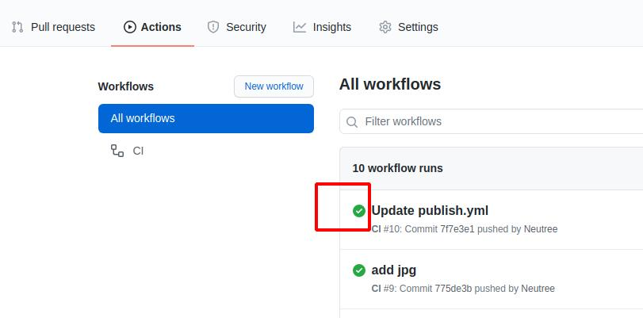
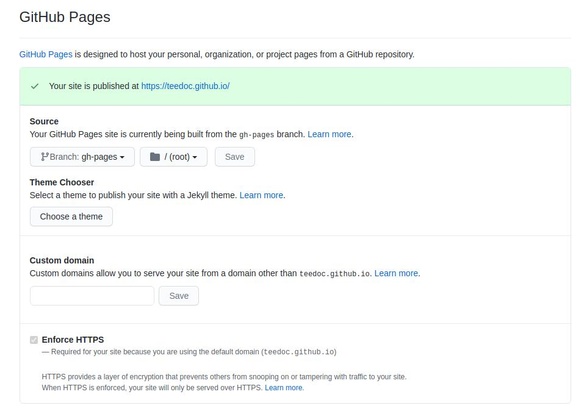
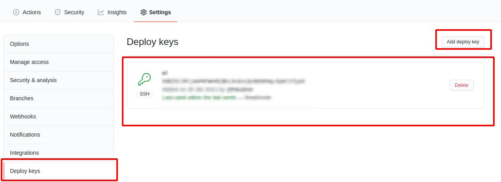

Deploy the website generated by teedoc to github pages
Because github provides free pages service, we only need to submit the html page to the gh-pages branch, and then enable the pages service in the project settings.
At the same time, we have also automated the page construction and push. Every time we submit code/documents to the warehouse, the github action will be triggered to automatically build and push to the gh-pages page, which is very simple, convenient and reliable!
Clone the template warehouse
Here we use the source code of teedoc official website as a template, visit https://github.com/teedoc/template or https://github.com/teedoc/teedoc.github.io
Click Use this template

Then fill in the new warehouse name (if you are not going to customize the domain name, the warehouse name is best to be teedoc.github.io and replace teedoc with your username or organization name) and description, and create a new one based on this warehouse Your own warehouse, now you have the same warehouse as the official website of teedoc
You will find a directory of
.github/workflows, this is the configuration file ofgithub action, we use this function to achieve:
When we update the source file of the repository,github actionautomatically builds and generates static web pages according to the commands of this configuration file, and then pushes them to thegh-pagesbranch of this repository
Among them,
sync_code_to_gitee.ymlandsync_pages_to_gitee.ymlare used to synchronize the code togitee, you can delete them, please study by yourself if necessary
Automatically trigger build
Every time the warehouse submits a modification, the build will be automatically triggered. After the build is completed, the generated html page will appear in the gh-pages branch. You can see the progress and log in the Actions column
If it is a green tick, it means success. Otherwise, it means failure. You can click in to see what the build log reported is wrong. Generally, the previous value is filled in incorrectly.

Set up pages service
Then find the pages service setting in the settings, open it, and then visit the corresponding domain name, you can check the Enforce HTTPS to enable HTTPS (recommended)
For example, here is https://teedoc.github.io/
Note that if the root path is not
/, and there is no custom domain name (see the following introduction for custom domain names), such ashttps://teedoc.github.io/my_site/, it needs to be insite_config.jsonConfigure"site_root_url":"/my_site/"

Pages Service Custom Domain
After deployment, there will be a default domain name, such as teedoc.github.io. If you want to use your own domain name, such as teedoc.neucrack.com, you need to customize the domain name.
The file directory of the website root directory mapping is set in the site_config.json file, for example, here is the pages/index/zh directory:
"pages": {
"/": "pages/index/zh",
"/en/": "pages/index/en"
},
Create a new file in this directory, name it CNAME and note that there is no suffix, then write a custom domain name such as teedoc.neucrack.com, save the file, and submit it
You may see the setting of
custom domainin the settings, but you need to set theCNAMEfile as mentioned here to keep it in effect, otherwise the custom domain name will be invalid next time you submit it
Automatically build advanced configuration
The build process is configured in the .github/workflows/publish.yml file, which mainly includes building documents, and pushing documents to the gh-pages branch, and the script can be modified according to the situation.
Used to push documents to the gh-pages branch, github-pages-deploy-action This github actioin plugin, more advances For the usage of the order, please read the documentation of this plugin
Generally, the above method is sufficient, and you can use it without configuring any parameters. In addition, the bottom of publish.yml provides a push method without plug-ins. If you need it, you can copy it to it and use it. You may need to use it. The following knowledge points:
- Generate ssh key
Generate a pair of key locally (relevant software needs to be installed under windows, please install it yourself (you will have it if you install git))
ssh-keygen -t rsa -f key.txt
Got the two files key.txt and key.key.pub
- Set the key
Set the ssh key in the settings of the document project, add a ssh key, copy the content in key.txt.pub, pay attention to the pub file, which is the public key, select ** to allow writing Permission**, take any name

Then click Secrets to set secret key-value pairs. The variables that need to be set are:
ACCESS_KEY: Copy the content inkey.txtGIT_EMAIL: Set agitsubmission email, just set yourgithubemailGIT_NAME: Set agitcommit name, just set yourgithubnameREPO: warehouse address, set toorganization name/warehouse nameoruser name/warehouse name, such asteedoc/teedoc.github.io

Of course, these variables can also be obtained directly from the submission record through the optimization script (except for ACCESS_KEY), if you are interested, you can optimize, and you are also welcome to submit a PR